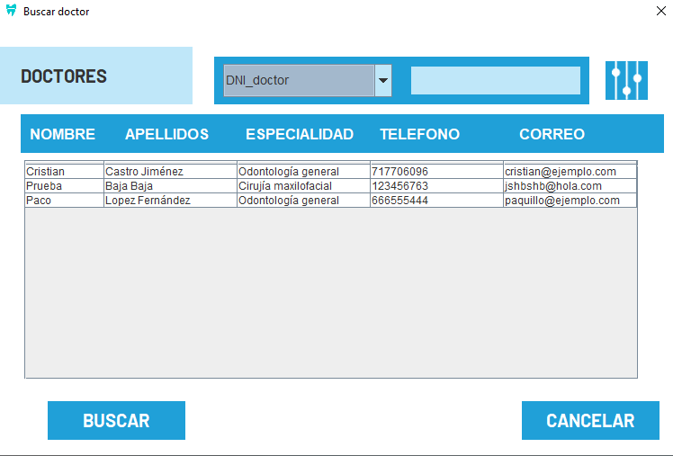
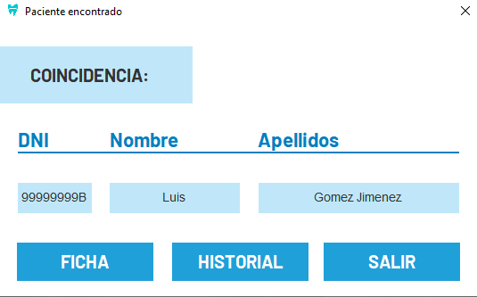
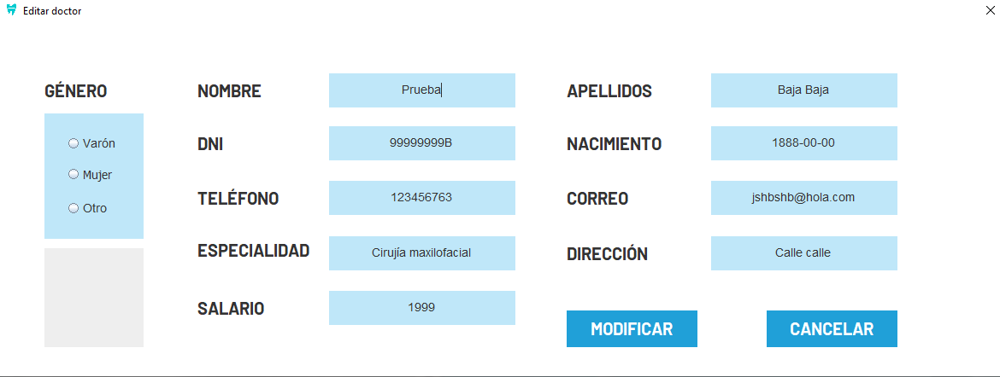
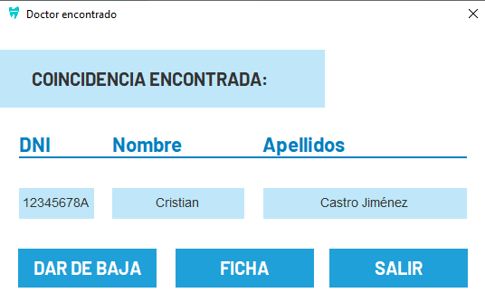
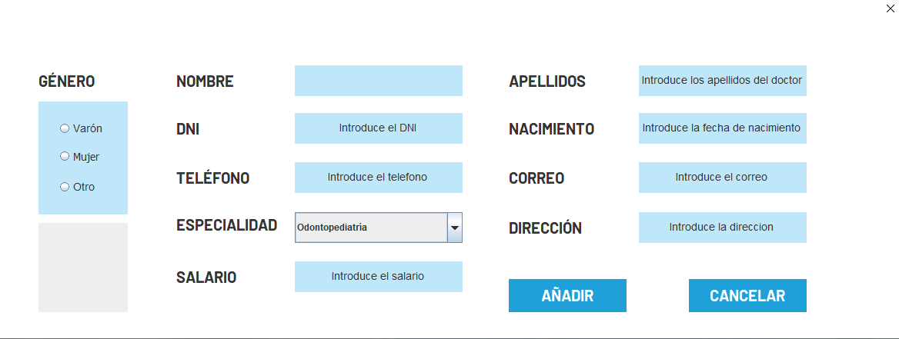

Aparecerá una tabla con la información de todos los doctores, en la que se podrá filtrar por apellidos, de forma que al seleccionar el elemento, se podrá acceder a la información de dicho doctor.
Tras esto, podrá acceder pulsando en los diferentes botones a toda la información del mismo:
Nuevamente se abrirá una tabla, pudiendo filtrar el contenido de la misma gracias a un buscador por apellidos, apareciendo esta pantalla si lo insertó correctamente:
Para dar la baja, es tan simple como buscar al doctor en la tabla y pulsar en el campo dar baja:
Para dar de alta a un nuevo doctor, seguirá el mismo procedimiento que siguió al editarlo, solo que esta vez, se abrirá directamente la pantalla para introducir la información sobre el mismo
